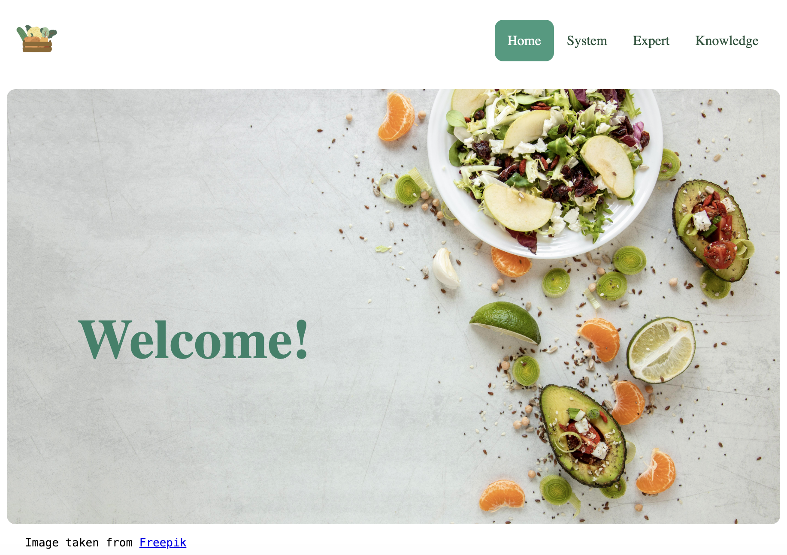
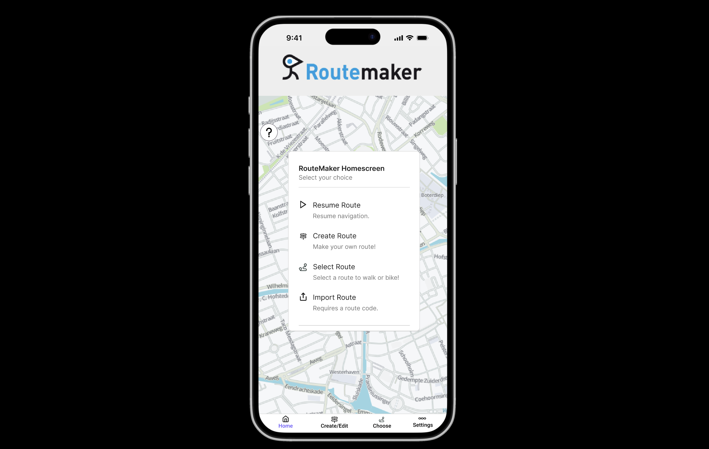
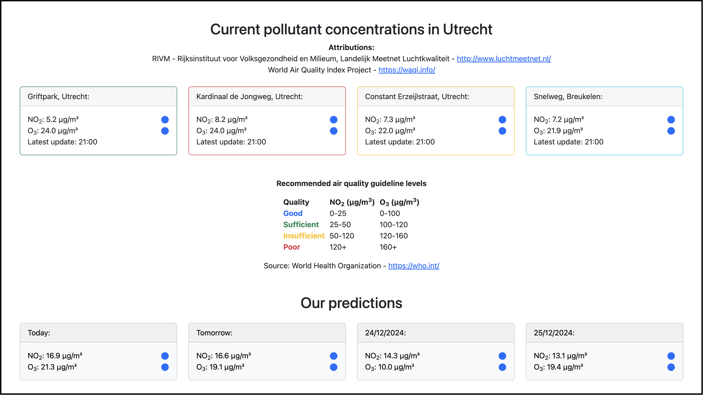

As the use of Artificial Intelligence in the field of healthcare increases, the need for accurate
explainability becomes crucial. Previous research has shown improvement in explanation Coherence
when using Contrastive Learning. We thus attempted to generalise this finding, observed on one
specific contrastive loss function, to Supervised Contrastive loss and to other explainability
properties, namely Faithfulness and Robustness. To do so, we trained two models, one with Weighted
Categorical Cross-Entropy loss and the other with Supervised Contrastive loss, following the SimCLR
framework. We then used these models to generate Grad-CAM explanations, based on which we measure
faithfulness using the Iterative Removal of Features metric and robustness using stability metrics.
This study found that Contrastive Learning had significantly better faithfulness scores but offered
no advantages in terms of explanation robustness. Future research should further investigate the
impact of Contrastive Learning using different datasets and a wider range of explanation quality properties.
More information via email

The Nutrigenomics Knowledge System project was completed for the Knowledge Technology
course at the University of Groningen. The knowledge system leverages the expertise
of Professor
Michael Muller to diagnose gut health. After answering a set of questions regarding
the user's diet, the user is able to see advice regarding their diet and how healthy it is.
See GitHub here

The project was commissioned by Irias to improve their application ‘Route Maker’ during my
Cognitive Ergonomics Practical course. I worked in a team of 5 to create a working prototype
of an improved interface. The goal of our redesign was to make sure that the user could easily
plan routes that fit their preferences instead of always seeing all functionalities that may
not pertain to them. To achieve this, we adopted the iterative process of researching, designing,
creating, and testing. We first performed a requirements analysis, then proceeded with designing,
creating an initial prototype, testing it against design heuristics, refining the prototype,
testing it with users, and making further improvements to finalize it. We used Figma to make our prototypes
which we then presented to our client at the end of the course to discuss integrating
our ideas into their application. The roles for this project were leader,
planner, researcher, graphic designer, builder, tester, writer, and editor. I was assigned the roles of
leader, planner, graphic designer, builder, and writer.
See Figma here

This project involved the development of a Machine Learning model for time-series
prediction in a team of three students for my Machine Learning for Industry course. This project
covers all steps of a machine learning life cycle. We were first tasked with identifying and collecting
trustworthy data, data exploration, preprocessing and feature engineering. Then, we trained a baseline Linear Regression
model, explored other machine learning models using PyTorch, tuned hyperparameters, tested the
models and chose the best one based on an evaluation of performance and costs. During the last stage
of our project, we deployed our best model – an ensemble of Long Short-Term Memory networks –
via a Quart web application. Additionally, we uploaded our application to Hugging Face but it is
currently not in use. For this project, all team members were equally responsible for the data
preprocessing and model building. Only two steps were split, with one team member being in charge
of running hyperparameter tuning using the university’s High Performance Computing cluster, while
the other teammate and I were in charge of deployment.
See GitHub here

I worked on this project in a team of four students during my Software Engineering course.
Our task was to develop a web application for managing office equipment inventory for our client
Gomibo | Belsimpel – a Dutch telecommunication webshop company. The project required us to
follow a Software development lifecycle which included extracting requirements from the client,
identifying stakeholders, personas, epics, and user stories, modeling diagrams such as sequence and
class diagrams, and finally coding and testing the application. We used a Laravel Backend, a React
Frontend, a MySQL database, and Docker containers. Throughout the project, my team adopted the
SCRUM framework with sprints that lasted two weeks and client feedback after each sprint. My roles
within the team were UX/UI Designer, Internal Communication Officer and Product Owner. The other
three teammates had multiple roles that included External Communication Officer, Chief Architect,
Scrum Master (two teammates), Technical Director, Documentation Leader. The final product was
delivered to our client at the end of the course, and while we are unsure of its current use, the
feedback we received from them was very positive.
See GitHub here